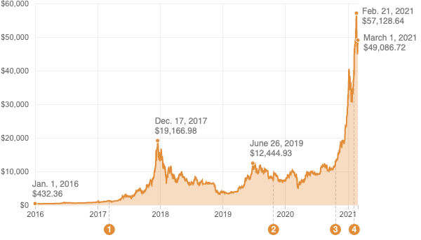

<%= await t.include("lib/_head.html") %>

<%
  var { yearAbbrev, yearFull, dayYear, dateFull } = require("./lib/helpers/formatDate");
  var milestones = [];
  COPY.data.forEach(function(d) {
    if (d.milestone) {
      var [m, day, y] = d.date.split("/").map(Number);
      thisDate = new Date(y, m - 1, day);
      milestones.push({
        date: thisDate,
        milestone: d.milestone
      });
    }
  });
%>

<% if (COPY.labels.headline) { %>
<h1><%= t.smarty(COPY.labels.headline) %></h1>
<% } %>

<% if (COPY.labels.subhed) { %>
<h2><%= t.smarty(COPY.labels.subhed) %></h2>
<% } %>

<div id="annotated-line-chart" class="graphic" role="img"
<% if (COPY.labels.screenreader) { %>
  aria-label="<%- COPY.labels.screenreader %>"
<% } %>
>
  
</div>

<div class="graphic" id="milestones">
  <h3><%= COPY.labels.hed_milestones %></h3>
<% milestones.forEach((d, i) => { %>
  <p class="milestone">
    <strong><span class="num"><%= (i + 1) %></span> <%= dateFull(d.date) %></strong>
    <span class="desc"><%= t.smarty(d.milestone) %></span>
  </p>
<% }); %>
</div>


<% if (COPY.labels.footnote) { %>
<div class="footnotes">
  <h4>Notes</h4>
  <p><%= COPY.labels.footnote %></p>
</div>
<% } %>

<div class="footer">
  <% if (COPY.labels.source) { %><p>Source: <%= COPY.labels.source %></p><% } %>
  <% if (COPY.labels.credit) { %><p>Credit: <%= COPY.labels.credit %></p><% } %>
</div>

<script type="text/javascript">
  var DATA = <%= JSON.stringify(COPY.data) %>;
</script>

<script src="./graphic.js"></script>

<%= await t.include("lib/_foot.html") %>
